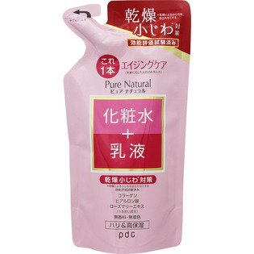

返回列表
产品名称：ピュア ナチュラル エッセンスローション リフト（つめかえ用）

ｐｄｃ ピュア ナチュラル エッセンスローション リフト（つめかえ用） ２００ｍｌ
メーカー ｐｄｃ
JANコード 4961989104263
商品の特徴
これ1本 ハリ＆高保湿
化粧水＋乳液
- 成分・分量
- ＜成分＞
水、グリセリン、BG、ポリソルベート60、エチルヘキサン酸セチル、PEG-30、水添ナタネ種子油、ジメチコン、ステアリン酸ソルビタン、水溶性コラーゲン、ヒアルロン酸Na、ローズマリーエキス、ステアリン酸PEG-45、パルミチン酸セチル、ベヘニルアルコール、ステアリン酸、エタノール、キサンタンガム、水酸化K、トコフェロール、（アクリレーツ／アクリル酸アルキル（C10-30））クロスポリマー、PVP、ペンテト酸5Na、フェノキシエタノール、メチルパラベン、プロピルパラベン
- 用法及び用量
- ＜使用方法＞
朝・夜の洗顔後、適量（500円硬貨大くらい）を手にとり、お肌にやさしくなじませてください。